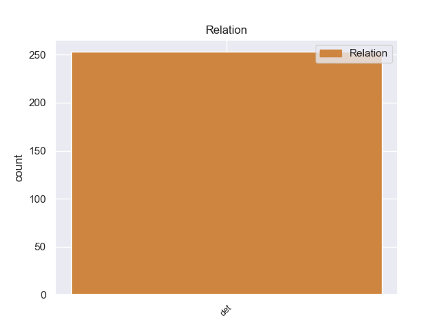
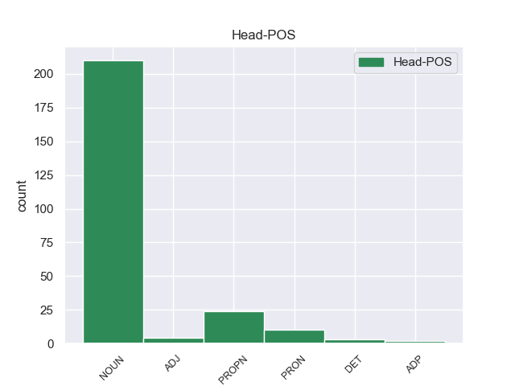
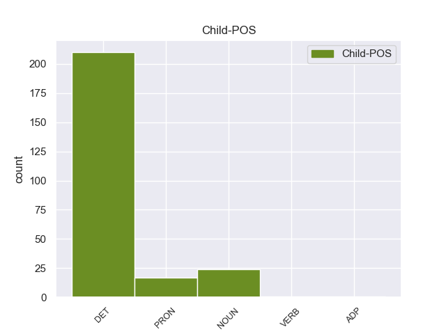

Distribution of features within this leaf



Agreement Rules sorted by frequency.
- When the dependent token is the determiner(det) of the head token, and the head token is NOUN
1 Πρώην _ _ _ _ 0 _ _ _
2 Υπουργός _ _ _ _ 0 _ _ _
3 της _ _ _ _ 0 _ _ _
4 Κυβέρνησης _ _ _ _ 0 _ _ _
5 του _ _ _ _ 0 _ _ _
6 Χοσέ _ _ _ _ 0 _ _ _
7 Μαρία _ _ _ _ 0 _ _ _
8 Αθνάρ _ _ _ _ 0 _ _ _
9 , _ _ _ _ 0 _ _ _
10 σ _ _ _ _ 0 _ _ _
11 την _ _ _ _ 0 _ _ _
12 Ισπανία _ _ _ _ 0 _ _ _
13 , _ _ _ _ 0 _ _ _
14 καταδικάστηκε _ _ _ _ 0 _ _ _
15 σε _ _ _ _ 0 _ _ _
16 έξι _ _ _ _ 0 _ _ _
17 έτη έτη NOUN _ Case=Acc|Gender=Fem|Number=Sing 0 _ _ _
18 κάθειρξης _ _ _ _ 0 _ _ _
19 για _ _ _ _ 0 _ _ _
20 ένα _ _ _ _ 0 _ _ _
21 πολύ _ _ _ _ 0 _ _ _
22 μεγάλο μεγάλο NOUN _ Case=Acc|Gender=Neut|Number=Sing 17 det _ _
23 σκάνδαλο _ _ _ _ 0 _ _ _
24 διαφθοράς _ _ _ _ 0 _ _ _
25 . _ _ _ _ 0 _ _ _
1 Θεωρείται _ _ _ _ 0 _ _ _
2 επίσης _ _ _ _ 0 _ _ _
3 ότι _ _ _ _ 0 _ _ _
4 θανάτωσε _ _ _ _ 0 _ _ _
5 1.200 _ _ _ _ 0 _ _ _
6 πολιτικούς _ _ _ _ 0 _ _ _
7 κρατούμενους _ _ _ _ 0 _ _ _
8 σ _ _ _ _ 0 _ _ _
9 την ο DET AtDf Case=Acc|Gender=Fem|Number=Sing 10 det _ _
10 Τρίπολη Τρίπολη PROPN PROPN Case=Acc|Gender=Fem|Number=Sing 0 _ _ _
11 . _ _ _ _ 0 _ _ _
1 Ο _ _ _ _ 0 _ _ _
2 λόγος _ _ _ _ 0 _ _ _
3 γίνεται _ _ _ _ 0 _ _ _
4 για _ _ _ _ 0 _ _ _
5 τον _ _ _ _ 0 _ _ _
6 Χάουμε _ _ _ _ 0 _ _ _
7 Μάτας _ _ _ _ 0 _ _ _
8 , _ _ _ _ 0 _ _ _
9 ο ο DET DET Case=Nom|Definite=Def|Gender=Masc|Number=Sing|PronType=Art 10 det _ _
10 οποίος οποίος PRON PRON Case=Nom|Gender=Masc|Number=Sing|Person=3|PronType=Rel 0 _ _ _
11 ήταν _ _ _ _ 0 _ _ _
12 Υπουργός _ _ _ _ 0 _ _ _
13 Περιβάλλοντος _ _ _ _ 0 _ _ _
14 τα _ _ _ _ 0 _ _ _
15 έτη _ _ _ _ 0 _ _ _
16 2000-2003 _ _ _ _ 0 _ _ _
17 και _ _ _ _ 0 _ _ _
18 Περιφερειακός _ _ _ _ 0 _ _ _
19 Πρωθυπουργός _ _ _ _ 0 _ _ _
20 των _ _ _ _ 0 _ _ _
21 Βαλεαρίδων _ _ _ _ 0 _ _ _
22 Νήσων _ _ _ _ 0 _ _ _
23 κατά _ _ _ _ 0 _ _ _
24 την _ _ _ _ 0 _ _ _
25 περίοδο _ _ _ _ 0 _ _ _
26 2003-2007 _ _ _ _ 0 _ _ _
27 . _ _ _ _ 0 _ _ _
1 Η _ _ _ _ 0 _ _ _
2 έρευνα έρευνα ADJ _ Case=Acc|Gender=Fem|Number=Sing 0 _ _ _
3 της _ _ _ _ 0 _ _ _
4 Ifop _ _ _ _ 0 _ _ _
5 έδειξε _ _ _ _ 0 _ _ _
6 ότι _ _ _ _ 0 _ _ _
7 « _ _ _ _ 0 _ _ _
8 το _ _ _ _ 0 _ _ _
9 μεγαλύτερο μεγαλύτερο NOUN _ Case=Acc|Gender=Neut|Number=Sing 2 det _ _
10 μέρος _ _ _ _ 0 _ _ _
11 των _ _ _ _ 0 _ _ _
12 ηλικιωμένων _ _ _ _ 0 _ _ _
13 θεωρεί _ _ _ _ 0 _ _ _
14 αυξημένη _ _ _ _ 0 _ _ _
15 την _ _ _ _ 0 _ _ _
16 τρομοκρατική _ _ _ _ 0 _ _ _
17 απειλή _ _ _ _ 0 _ _ _
18 , _ _ _ _ 0 _ _ _
19 ενώ _ _ _ _ 0 _ _ _
20 μονάχα _ _ _ _ 0 _ _ _
21 το _ _ _ _ 0 _ _ _
22 5% _ _ _ _ 0 _ _ _
23 των _ _ _ _ 0 _ _ _
24 ατόμων _ _ _ _ 0 _ _ _
25 ηλικίας _ _ _ _ 0 _ _ _
26 18-24 _ _ _ _ 0 _ _ _
27 ετών _ _ _ _ 0 _ _ _
28 συμφωνεί _ _ _ _ 0 _ _ _
29 μ' _ _ _ _ 0 _ _ _
30 αυτή _ _ _ _ 0 _ _ _
31 την _ _ _ _ 0 _ _ _
32 άποψη _ _ _ _ 0 _ _ _
33 . _ _ _ _ 0 _ _ _
1 Αυτή _ _ _ _ 0 _ _ _
2 η _ _ _ _ 0 _ _ _
3 νίκη _ _ _ _ 0 _ _ _
4 έδωσε _ _ _ _ 0 _ _ _
5 σ _ _ _ _ 0 _ _ _
6 τη _ _ _ _ 0 _ _ _
7 Μπενφίκα _ _ _ _ 0 _ _ _
8 την _ _ _ _ 0 _ _ _
9 πρόκριση _ _ _ _ 0 _ _ _
10 σ _ _ _ _ 0 _ _ _
11 την _ _ _ _ 0 _ _ _
12 επόμενη επόμενη NOUN _ Case=Acc|Gender=Fem|Number=Sing 13 det _ _
13 φάση φάσης DET _ Case=Nom|Definite=Def|Gender=Fem|Number=Sing|PronType=Art 0 _ _ _
14 του _ _ _ _ 0 _ _ _
15 Τσάμπιονς _ _ _ _ 0 _ _ _
16 Λιγκ _ _ _ _ 0 _ _ _
17 . _ _ _ _ 0 _ _ _
1 Έτσι _ _ _ _ 0 _ _ _
2 , _ _ _ _ 0 _ _ _
3 σ _ _ _ _ 0 _ _ _
4 το ο DET _ Case=Acc|Gender=Fem|Number=Sing 5 det _ _
5 όνομα όνομα ADP _ Case=Acc|Gender=Fem|Number=Sing 0 _ _ _
6 της _ _ _ _ 0 _ _ _
7 αυτοδιάθεσης _ _ _ _ 0 _ _ _
8 των _ _ _ _ 0 _ _ _
9 λαών _ _ _ _ 0 _ _ _
10 , _ _ _ _ 0 _ _ _
11 εμείς _ _ _ _ 0 _ _ _
12 υποστηρίζουμε _ _ _ _ 0 _ _ _
13 το _ _ _ _ 0 _ _ _
14 δικαίωμα _ _ _ _ 0 _ _ _
15 των _ _ _ _ 0 _ _ _
16 λαών _ _ _ _ 0 _ _ _
17 να _ _ _ _ 0 _ _ _
18 χρησιμοποιήσουν _ _ _ _ 0 _ _ _
19 ξανά _ _ _ _ 0 _ _ _
20 κάποια _ _ _ _ 0 _ _ _
21 στιγμή _ _ _ _ 0 _ _ _
22 σ _ _ _ _ 0 _ _ _
23 το _ _ _ _ 0 _ _ _
24 μέλλον _ _ _ _ 0 _ _ _
25 το _ _ _ _ 0 _ _ _
26 εθνικό _ _ _ _ 0 _ _ _
27 τους _ _ _ _ 0 _ _ _
28 νόμισμα _ _ _ _ 0 _ _ _
29 όπως _ _ _ _ 0 _ _ _
30 έπραξαν _ _ _ _ 0 _ _ _
31 πριν _ _ _ _ 0 _ _ _
32 από _ _ _ _ 0 _ _ _
33 λίγο _ _ _ _ 0 _ _ _
34 καιρό _ _ _ _ 0 _ _ _
35 οι _ _ _ _ 0 _ _ _
36 λαοί _ _ _ _ 0 _ _ _
37 που _ _ _ _ 0 _ _ _
38 απελευθερώθηκαν _ _ _ _ 0 _ _ _
39 από _ _ _ _ 0 _ _ _
40 τον _ _ _ _ 0 _ _ _
41 σοβιετικό _ _ _ _ 0 _ _ _
42 ομοσπονδιακό _ _ _ _ 0 _ _ _
43 ζυγό _ _ _ _ 0 _ _ _
44 . _ _ _ _ 0 _ _ _
Disagree Examples:
1 Τις _ _ _ _ 0 _ _ _
2 καταθέσεις _ _ _ _ 0 _ _ _
3 , _ _ _ _ 0 _ _ _
4 σ _ _ _ _ 0 _ _ _
5 τις _ _ _ _ 0 _ _ _
6 οποίες _ _ _ _ 0 _ _ _
7 δεν _ _ _ _ 0 _ _ _
8 έχει _ _ _ _ 0 _ _ _
9 γίνει _ _ _ _ 0 _ _ _
10 καμία _ _ _ _ 0 _ _ _
11 κίνηση _ _ _ _ 0 _ _ _
12 του _ _ _ _ 0 _ _ _
13 λογαριασμού _ _ _ _ 0 _ _ _
14 για _ _ _ _ 0 _ _ _
15 20 _ _ _ _ 0 _ _ _
16 χρόνια _ _ _ _ 0 _ _ _
17 έχει _ _ _ _ 0 _ _ _
18 βάλει _ _ _ _ 0 _ _ _
19 σ _ _ _ _ 0 _ _ _
20 το _ _ _ _ 0 _ _ _
21 στόχαστρο _ _ _ _ 0 _ _ _
22 το _ _ _ _ 0 _ _ _
23 Υπουργείο _ _ _ _ 0 _ _ _
24 Οικονομικών _ _ _ _ 0 _ _ _
25 , _ _ _ _ 0 _ _ _
26 καθώς _ _ _ _ 0 _ _ _
27 μάλιστα _ _ _ _ 0 _ _ _
28 σύμφωνα _ _ _ _ 0 _ _ _
29 με _ _ _ _ 0 _ _ _
30 εκτιμήσεις _ _ _ _ 0 _ _ _
31 τραπεζικών _ _ _ _ 0 _ _ _
32 στελεχών _ _ _ _ 0 _ _ _
33 φθάνουν _ _ _ _ 0 _ _ _
34 το _ _ _ _ 0 _ _ _
35 ποσό _ _ _ _ 0 _ _ _
36 των ο DET DET Case=Gen|Definite=Def|Gender=Neut|Number=Plur|PronType=Art 39 det _ _
37 3 _ _ _ _ 0 _ _ _
38 δισεκατομμυρίων _ _ _ _ 0 _ _ _
39 ευρώ ευρώ NOUN NOUN Case=Acc|Gender=Neut|Number=Sing 0 _ _ _
40 . _ _ _ _ 0 _ _ _
1 Ο _ _ _ _ 0 _ _ _
2 ΙΣΑ _ _ _ _ 0 _ _ _
3 τονίζει _ _ _ _ 0 _ _ _
4 ότι _ _ _ _ 0 _ _ _
5 παρά _ _ _ _ 0 _ _ _
6 το _ _ _ _ 0 _ _ _
7 γεγονός _ _ _ _ 0 _ _ _
8 ότι _ _ _ _ 0 _ _ _
9 είχε _ _ _ _ 0 _ _ _
10 προειδοποιήσει _ _ _ _ 0 _ _ _
11 για _ _ _ _ 0 _ _ _
12 την _ _ _ _ 0 _ _ _
13 επερχόμενη _ _ _ _ 0 _ _ _
14 επιδημία _ _ _ _ 0 _ _ _
15 , _ _ _ _ 0 _ _ _
16 ο _ _ _ _ 0 _ _ _
17 πληθυσμός _ _ _ _ 0 _ _ _
18 έμεινε _ _ _ _ 0 _ _ _
19 ακάλυπτος _ _ _ _ 0 _ _ _
20 , _ _ _ _ 0 _ _ _
21 επισημαίνοντας _ _ _ _ 0 _ _ _
22 χαρακτηριστικά _ _ _ _ 0 _ _ _
23 ότι _ _ _ _ 0 _ _ _
24 " _ _ _ _ 0 _ _ _
25 για _ _ _ _ 0 _ _ _
26 ένα _ _ _ _ 0 _ _ _
27 εμβόλιο _ _ _ _ 0 _ _ _
28 των ο DET DET Case=Gen|Definite=Def|Gender=Neut|Number=Plur|PronType=Art 30 det _ _
29 6 _ _ _ _ 0 _ _ _
30 ευρώ ευρώ NOUN NOUN Case=Acc|Gender=Neut|Number=Sing 0 _ _ _
31 πεθαίνουν _ _ _ _ 0 _ _ _
32 άνθρωποι _ _ _ _ 0 _ _ _
33 " _ _ _ _ 0 _ _ _
34 . _ _ _ _ 0 _ _ _
1 Νέα _ _ _ _ 0 _ _ _
2 υποχώρηση _ _ _ _ 0 _ _ _
3 της _ _ _ _ 0 _ _ _
4 ελευθερίας _ _ _ _ 0 _ _ _
5 του _ _ _ _ 0 _ _ _
6 τύπου _ _ _ _ 0 _ _ _
7 διαπιστώνει _ _ _ _ 0 _ _ _
8 σ _ _ _ _ 0 _ _ _
9 την _ _ _ _ 0 _ _ _
10 Ελλάδα _ _ _ _ 0 _ _ _
11 η _ _ _ _ 0 _ _ _
12 οργάνωση _ _ _ _ 0 _ _ _
13 " _ _ _ _ 0 _ _ _
14 Δημοσιογράφοι _ _ _ _ 0 _ _ _
15 Χωρίς _ _ _ _ 0 _ _ _
16 Σύνορα _ _ _ _ 0 _ _ _
17 " _ _ _ _ 0 _ _ _
18 , _ _ _ _ 0 _ _ _
19 της _ _ _ _ 0 _ _ _
20 οποίας _ _ _ _ 0 _ _ _
21 η _ _ _ _ 0 _ _ _
22 ετήσια _ _ _ _ 0 _ _ _
23 έκθεση έκθεση NOUN _ Case=Acc|Gender=Fem|Number=Sing 0 _ _ _
24 αποτελεί _ _ _ _ 0 _ _ _
25 βαρόμετρο _ _ _ _ 0 _ _ _
26 για _ _ _ _ 0 _ _ _
27 την _ _ _ _ 0 _ _ _
28 κατάσταση _ _ _ _ 0 _ _ _
29 της _ _ _ _ 0 _ _ _
30 ελευθερίας _ _ _ _ 0 _ _ _
31 του _ _ _ _ 0 _ _ _
32 τύπου _ _ _ _ 0 _ _ _
33 σε _ _ _ _ 0 _ _ _
34 ολόκληρο _ _ _ _ 0 _ _ _
35 τον _ _ _ _ 0 _ _ _
36 κόσμο κόσα NOUN _ Case=Acc|Gender=Fem|Number=Plur 23 det _ _
37 . _ _ _ _ 0 _ _ _